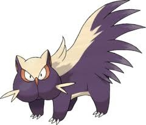
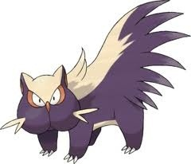

Skunk Game
To win, you roll the dice to be the first to get to 100 points. Press the button that says "Roll Dice" to generate winnings for a round. The button that says "Pass Turn" will allow you to end your turn and put your winnings for the round into your total points.
Be warned, instead of a 1, there is a skunk on the die. If you get 1 skunk, you get zero points for that round and your turn ends. If you get 2 skunks, your TOTAL points are reset to zero and your turn ends.
Good luck ;)
It's Player 1's turn!

Points this round:
0

It is Player 1's turn. Roll the dice.
Player 1: 0
Player 2: 0